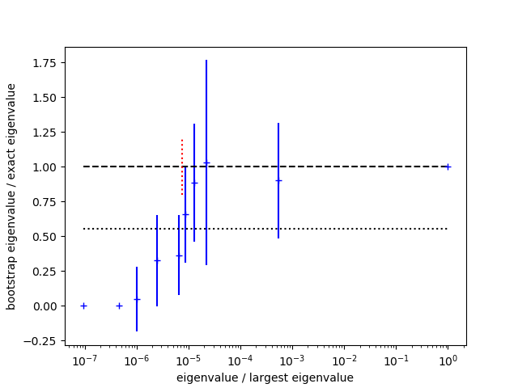

Case Study: Correlations and SVD Cuts¶
This case study illustrates a problem that arises when constructing correlation matrices from a small number of random samples. It shows how to fix the problem using an SVD cut.
The Problem¶
We want to determine the slope indicated by measurements of a quantity
y(x[i]) = y0 + s * x[i]
for x=[1,2...10]. The
measurements are noisy so we average 13 sets y_sample[j]
of independent measurements:
import numpy as np
import gvar as gv
x = np.array([1., 2., 3., 4., 5., 6., 7., 8., 9., 10.])
y_samples = [
[2.8409, 4.8393, 6.8403, 8.8377, 10.8356, 12.8389, 14.8356, 16.8362, 18.8351, 20.8341],
[2.8639, 4.8612, 6.8597, 8.8559, 10.8537, 12.8525, 14.8498, 16.8487, 18.8460, 20.8447],
[3.1048, 5.1072, 7.1071, 9.1076, 11.1090, 13.1107, 15.1113, 17.1134, 19.1145, 21.1163],
[3.0710, 5.0696, 7.0708, 9.0705, 11.0694, 13.0681, 15.0693, 17.0695, 19.0667, 21.0678],
[3.0241, 5.0223, 7.0198, 9.0204, 11.0191, 13.0193, 15.0198, 17.0163, 19.0154, 21.0155],
[2.9719, 4.9700, 6.9709, 8.9706, 10.9707, 12.9705, 14.9699, 16.9686, 18.9676, 20.9686],
[3.0688, 5.0709, 7.0724, 9.0730, 11.0749, 13.0776, 15.0790, 17.0800, 19.0794, 21.0795],
[3.1471, 5.1468, 7.1452, 9.1451, 11.1429, 13.1445, 15.1450, 17.1435, 19.1425, 21.1432],
[3.0233, 5.0233, 7.0225, 9.0224, 11.0225, 13.0216, 15.0224, 17.0217, 19.0208, 21.0222],
[2.8797, 4.8792, 6.8803, 8.8794, 10.8800, 12.8797, 14.8801, 16.8797, 18.8803, 20.8812],
[3.0388, 5.0407, 7.0409, 9.0439, 11.0443, 13.0459, 15.0455, 17.0479, 19.0493, 21.0505],
[3.1353, 5.1368, 7.1376, 9.1367, 11.1360, 13.1377, 15.1369, 17.1400, 19.1384, 21.1396],
[3.0051, 5.0063, 7.0022, 9.0052, 11.0040, 13.0033, 15.0007, 16.9989, 18.9994, 20.9995],
]
y = gv.dataset.avg_data(y_samples)
The result is an array of 10 gvar.GVars
>>> print(y)
[3.013(27) 5.013(27) 7.013(27) 9.013(27) 11.012(27) 13.013(27) 15.013(28)
17.013(28) 19.012(28) 21.013(28)]
that are highly correlated:
>>> print(gv.evalcorr(y)[:4,:4])
[[1. 0.99990406 0.99973156 0.99959261]
[0.99990406 1. 0.99985848 0.99982468]
[0.99973156 0.99985848 1. 0.99987618]
[0.99959261 0.99982468 0.99987618 1. ]]
To extract a slope we fit these data using the lsqfit module:
import lsqfit
def fcn(p):
return p['y0'] + p['s'] * x
prior = gv.gvar(dict(y0='0(5)', s='0(5)'))
fit = lsqfit.nonlinear_fit(data=y, fcn=fcn, prior=prior)
print(fit)
The fit, however, is very poor, with a chi**2 per degree of freedom
of 8.3:
Least Square Fit:
chi2/dof [dof] = 8.3 [10] Q = 1.1e-13 logGBF = 11.816
Parameters:
y0 0.963 (12) [ 0.0 (5.0) ]
s 2.00078 (18) [ 0.0 (5.0) ]
Settings:
svdcut/n = 1e-12/0 tol = (1e-08*,1e-10,1e-10) (itns/time = 5/0.0)
The problem is that we do not have enough samples in y_sample to determine
the correlation matrix sufficiently accurately. The smallest
eigenvalues of the correlation matrix tend to be underestimated with small
samples. Indeed the smallest eigenvalues go to zero when the sample size is
smaller than the dimension of y (i.e., 10 here). The underestimated
eigenvalues result in contributions to the chi**2
function in the fit that are both spurious and large.
A Poor Solution¶
One solution is to declare the correlations unreliable and to discard them, keeping just the individual standard deviations:
y = gv.gvar(gv.mean(y), gv.sdev(y))
fit = lsqfit.nonlinear_fit(data=y, fcn=fcn, prior=prior)
print(fit)
This gives an acceptable fit,
Least Square Fit:
chi2/dof [dof] = 0.02 [10] Q = 1 logGBF = 12.924
Parameters:
y0 1.013 (18) [ 0.0 (5.0) ]
s 1.9999 (30) [ 0.0 (5.0) ]
Settings:
svdcut/n = 1e-12/0 tol = (1e-08*,1e-10,1e-10) (itns/time = 5/0.0)
but the very small chi**2 confirms what we suspect: that we are ignoring
very strong correlations that are relevant to the fit.
Not surprisingly, the accuracy of our slope determination is quite
sensitive to these correlations.
A Better Solution¶
A better solution is to determine which of the correlation matrix’s
eigenvalues are accurate and retain those in the fit. We do this
with gvar.dataset.svd_diagnosis() which uses a bootstrap
analysis to investigate the accuracy and stability of the eigenvalues.
Adding the code
svd = gv.dataset.svd_diagnosis(y_samples)
svd.plot_ratio(show=True)
displays a plot showing the ratio of the bootstrap estimate for each eigenvalue divided by the real eigenvalue:
{kind=link}
The bootstrap tests the stability of eigenvalues with limited sample sizes. Bootstrap estimates that are significantly lower than the real values indicate eigenvalues that are likely unreliable. Here bootstrap eigenvalues agree well with the real values for the upper half of the spectrum, but are all low for the lower half. The standard deviation for the chi-squared per degree of freedom is indicated by the dotted (bottom) line in the plot; the SVD cut is chosen so that (most) eigenvalues that fall below this line are modified. The bootstrap errors give a sense for how accurately the underlying eigenvalues are determined given the sample size.
The plot shows that the fitting problem lies with
the eigenvalues that are smaller than roughly 10-5 times
the largest
eigenvalue. To address this problem we introduce an SVD cut
using gvar.svd() with a value for svdcut suggested
by gvar.dataset.svd_diagnosis() (dotted red line in the figure):
y = gv.svd(y, svdcut=svd.svdcut)
fit = lsqfit.nonlinear_fit(data=y, fcn=fcn, prior=prior)
print(fit)
gv.svd(y, svdcut=svd.svdcut) creates a new version of the
data y with a correlation matrix whose large eigenvalues are
unchanged but whose small eigenvalues, below svdcut*max_eig,
are all set equal to svdcut*max_eig
(where max_eig is the largest eigenvalue). This probably
overestimates the uncertainties associated with the small eigenvalues,
and so is a conservative move.
It makes the correlation matrix less singular, and fixes the fit:
Least Square Fit:
chi2/dof [dof] = 0.9 [10] Q = 0.53 logGBF = 45.208
Parameters:
y0 1.008 (22) [ 0.0 (5.0) ]
s 2.00001 (22) [ 0.0 (5.0) ]
Settings:
svdcut/n = 1e-12/0 tol = (1e-08*,1e-10,1e-10) (itns/time = 5/0.0)
Our final estimate for the slope is s = 2.00001(22), whose uncertainty
is more than an order-of-magnitude smaller than what we obtained from
the uncorrelated fit.
This simple problem can be approached in different ways. For example,
we could estimate the slope from y[i+1] - y[i], doing a weighted
average over all values of i:
slope = lsqfit.wavg(y[1:] - y[:-1])
print(slope)
This again gives a slope of 2.00001(22) provided an SVD cut has
first been applied to y.
SVD cuts are often necessary when using correlation matrices constructed from random samples. Typically large numbers of samples are needed to calculate all of a correlation matrix’s eigenvalues accurately — 10–100 times as many samples as there are variables, or more. Such large numbers of samples are often not feasible, in which case an SVD cut might be essential for a usable correlation matrix.